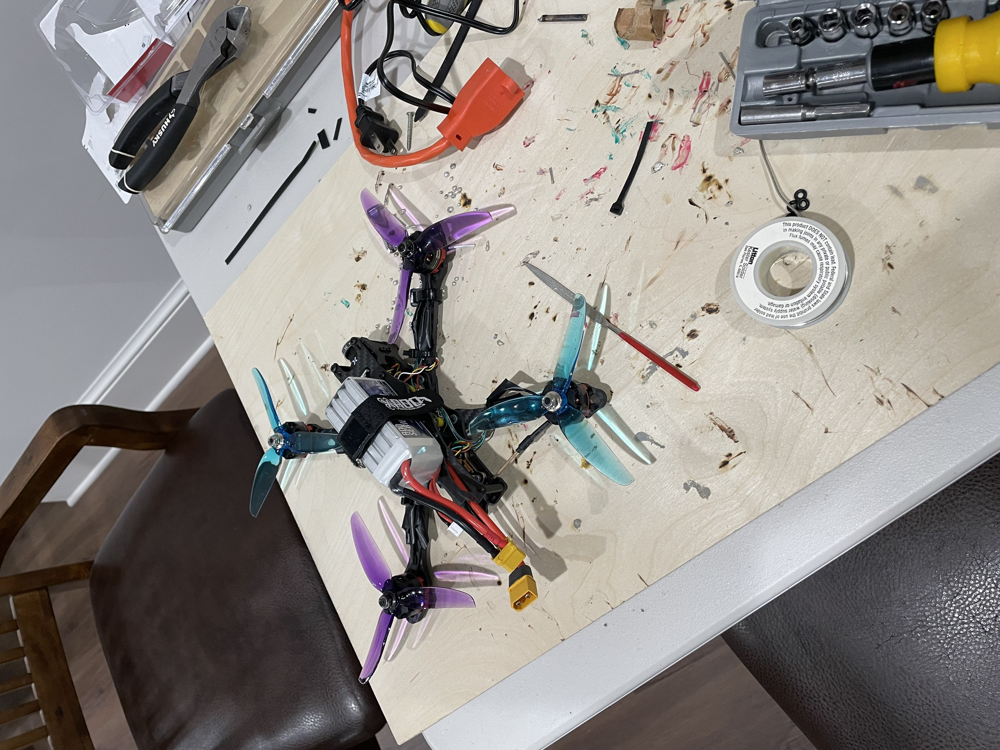

Hardware Trade Study, Stack Architecture & Flight Test Methodology
- Confirmed Airframe & Avionics Stack: Executed cost–performance trade studies to select, assemble, and solder a 5-inch freestyle testbed: STEELE 5 (220 mm, 5 mm carbon arm) frame, SpeedyBee F405 V3 stack (
STM32F405MCU,BMI270gyro, onboard barometer, microSD Blackbox, 50A 4-in-1 ESC), Racerstar BR2205 2300KV brushless motors, HQProp 5×4.3×3 V2S tri-blade polycarbonate props, 14.8V 4S 1300mAh 100C LiPo, Foxeer Razer Mini 1200TVL camera, EWRF 5.8GHz 650mW VTX, and Hall-gimbal JumperRC T-Lite V2 OpenTX transmitter. - Decoupled Propulsion vs. Controls Testing: Separated static/climb propulsion efficiency from closed-loop PID attitude tuning. Quantified electrical input power (P = V·I) via inline wattmeter and vertical climb kinematics (a ≈ 2h/t²) across fixed altitude intervals to evaluate thrust-to-power efficiency (ηT = T/P, achieving a +15% improvement).
- Controlled 5-Stage Betaflight 4.4.3 PID Tuning: Backed up CLI config and flashed target
SPEEDYBEEF405V3with microSD Blackbox logging. Executed sequential single-parameter flight test sweeps: (1) Baseline oscillation/overshoot characterization → (2) P-gain attitude error responsiveness → (3) D-gain prop-wash damping vs. motor thermal noise → (4) I-gain sustained attitude hold & disturbance rejection → (5) Repeatability validation.

Designed a 3-inch Kevlar/rubber sensorized EVA boot sole and rigid rear-ankle electronics housing that collects, filters, normalizes, and cross-references 4 sensor modalities on every astronaut footstep against the NASA Planetary Data System (PDS) library to flag subsurface voids and classify ISRU minerals in real time:
| Sensor Modality | Hardware & Placement | Operating Specs & Depth | Power & Data / Step | Multi-Sensor Fusion & Hazard Role |
|---|---|---|---|---|
| UWB Ground-Penetrating Radar | 6×6 cm patch antenna in sole; heel PCB | 1.5–3 GHz, 2 ns pulse; 3–5 m depth (5–10 cm res.) | ~225 mW avg (150 ms active); 1–5 KB | Maps subsurface lava tubes, voids, and water-ice boundaries. |
| MEMS FT-NIR Spectrometer | 2 cm³ chip, sapphire window, NIR LEDs | 900–2500 nm range (10–50 nm resolution) | ~15–25 mW avg (50 ms flash); 0.5–1 KB | Identifies olivine, pyroxene, high-Ti ilmenite & OH⁻ water indicators. |
| Piezoelectric (PZT) Cleats | mm-scale Lead Zirconate Titanate on cleats | Top-cm force-displacement & soil compaction | Net +10 to +25 mW generated; 0.1 KB | Quantifies regolith bearing capacity & harvests footfall energy for GPR. |
| Seismic / Acoustic Geophone | 2–5 cm³ MEMS geophone in heel cup | 10–240 Hz, ~28.8 V/m/s (SM-24 grade); 3–20 m | Passive (~1–5 mW digitizer); 5–20 KB | Fuses with PZT: thin weak surface + deep seismic void = collapse alert. |